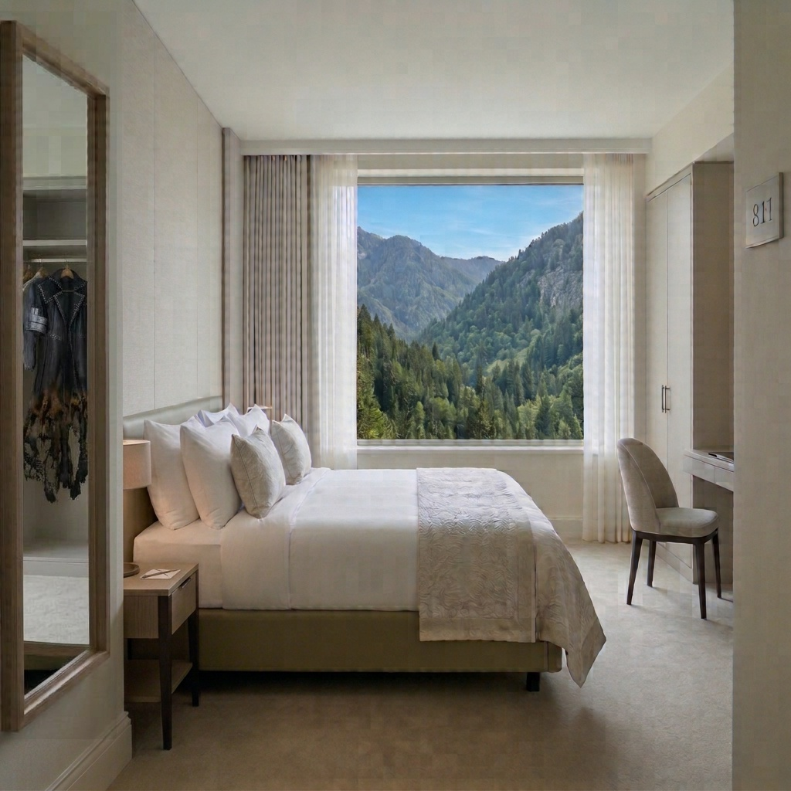

雄大な自然
豊かな山々に包まれた、解放感のある滞在。
A space of freedom that liberates you from the pressures of everyday life
日常から離れ、自然の呼吸に耳を澄ます。
群訝山荘で、身も心も解放された時間をお過ごしください。
木々のざわめき、移ろう光、澄んだ空気。群訝山荘は、デトネラット社所有の自然に囲まれた宿です。
わたしたちの経営理念は、すべての人を〝解放〟する。開放的な空間で個性を発揮したり、ゆっくりと食事を楽しんだり。ここで過ごす時間が、日々のストレスから解放してくれます。
豊かな山々に包まれた、解放感のある滞在。
どんな個性も、ありのままの自分で過ごせる部屋。
空を見上げるたび表情が変わっていく、あなた。
自然の景色を眺めながら、
開放的な空間でお過ごしいただけます。

A VIEW FROM YOUR ROOM
大きな窓の向こうに山並みを望む、明るく落ち着いた個室。ゆったりとした寝具に身を預け、日常の熱を冷ます静かな時間をお過ごしいただけます。
GUNGA SANSO ／ PRIVATE ROOM
A MOMENT OF FREEDOM
静かな客室に置かれた、ひとつのデジタル時計。時刻にまつわる仕掛けをお楽しみください。
GUNGA SANSO ／ PRIVATE ROOM※ 現在、8階客室の予約は休止しております。
安心してご宿泊いただくために、
必ずご案内をご確認ください。
施設内では、ほかのお客様へのご配慮をお願いいたします。
山の天候は変わりやすいため、周辺の散策には十分ご注意ください。
当施設は全室完全予約制です。当日宿泊はお断りいたします。
ご案内に記載された確認事項をご入力ください。
確認欄を読み込んでいます。
入力内容はこの端末のブラウザ内に保存されます。
THE OLD ORDER ENDS HERE
ACCESS GRANTED ／ INTERNAL DOCUMENT
この世界に敷かれた秩序を疑い、
あるべき姿を自らの手で選び取る。
超常解放戦線は、既存の社会秩序と超常の力をめぐる価値観に異議を唱える組織である。
敵連合と異能解放軍は、ここに「超常解放戦線」結成を宣言する。すべての人類に、個性の解放を！
組織を導く者たち。
計画の中心を担う者たち。
各地に広がる協力者たち。
記録データは現在整理中。
STATUS : ARCHIVED閲覧可能な記録はありません。
STATUS : RESTRICTEDWE WILL DEFINE OUR OWN FREEDOM.
END OF TRANSMISSION